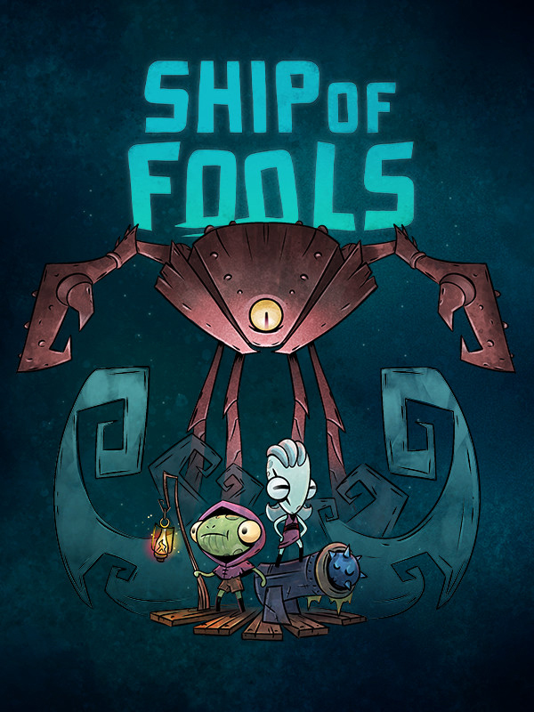

Ship of Fools
Ship of Fools
Details
 |
|
| Playtime | Not Played |
| Last Activity | Never |
| Added | 2026-06-09 12:22:39 |
| Modified | 2026-06-09 12:23:08 |
| Completion Status | Not Played |
| Library | Steam |
| Source | Steam |
| Platform | PC (Windows) |
| Release Date | 2022-11-22 |
| Community Score | 72 |
| Critic Score | 79 |
| User Score | |
| Genre | Adventure Indie Strategy |
| Developer | Fika Productions |
| Publisher | Team17 |
| Feature | Co-Operative Multiplayer Single Player |
| Links | Steam Official Website Discord Twitch YouTube Bluesky Playstation Nintendo Xbox |
| Tag | 2D Action Action Roguelike Colorful Combat Co-op Cute Fantasy Great Soundtrack Indie Local Co-Op Local Multiplayer Multiplayer Naval Naval Combat Online Co-Op Pirates Roguelike Roguelite Singleplayer |
Description
Ship of Fools is a seafaring roguelite co-op game where you play the Fools, the only creatures fool enough to brave the sea. The Great Lighthouse that once protected the Archipelago is broken and a storm of malice and corruption is coming.
Together, you and your ship mate will jump aboard The Stormstrider and make your voyage across the sea. Man the cannons, ready your sails and protect your ship from sea monsters over multiple runs. It’s up to you to defend your home from the almighty Aquapocalypse.
In a clamshell, Ship of Fools is a game about blasting away your seaborne foes with mighty cannons as you defend your ship. Inspired by modern classic roguelites and built for co-op, you’ll want to bring your first mate on deck and enjoy oarsome combat as you unlock new trinkets and artifacts to help you save the world from catastrophe.

Designed for co-op play, frantic combat encounters with the horrifying creatures of the storm will test your teamwork. Work together to defend and repair the ship, combine item effects in powerful combos and make sure you have your shipmate’s back if you don’t want to become fish food.

Uncover lost treasures and remote shops on the islands of the Archipelago, but plan your moves carefully! As you chart your way through the sector, the Everlasting Storm shifts and changes, blocking your paths with its fury. You’ll need to adjust your course in reaction to storm movements and decide when you can brave a trip to discover what lurks inside the storm.

Man your ship as a solo sailor and fight your way through dangerous waters and keep the glory for yourself, Ship of Fools offers solo play as well as multiplayer. As they sing in old sailor songs: it’s sometimes better to have no crew than a dysfunctional one!

With many Fools to play with, unique items to find and unlock, combat encounters to fight in and many islands to visit, each run will bring something new to your voyage. Bolster your strength each time, ready to defeat the monsters of the deep sea.
Key Features
Frantic nautical combat with another shipmate in co-op or as a solo sailor
Colossal leviathans to challenge the hardiest of sailors
Chart your route through the maps of the Archipelago and brave the Everlasting Storm
Embody one of the unique Fools with special abilities to help you on your journey
100+ trinkets and artifacts to collect and combo for winning strategies
Swashbuckling hand-drawn artwork to put the wind in your sails
Please note: A controller is required for local multiplayer